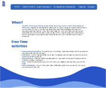
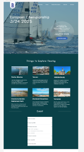
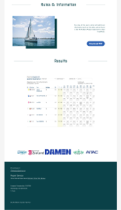
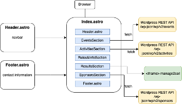

Dit project heb ik uitgevoerd bij Nedbase Digital Agency tijdens mijn meewerkstage, waarbij ik verantwoordelijk was voor het ontwerpen en realiseren van een microsite voor het EK Zeilen.
Voor het EK Zeilen was er behoefte aan een vernieuwde website waarop bezoekers eenvoudig informatie kunnen vinden over het evenement. De huidige website werd voornamelijk gebruikt door zeilers die snel toegang willen tot praktische informatie. Hierdoor lag de focus minder op visueel design en meer op gebruiksvriendelijkheid en vindbaarheid van content.
In samenwerking met de stakeholder is de bestaande website geanalyseerd en is bepaald hoe de nieuwe structuur eruit moest komen te zien. Hierbij stond centraal hoe informatie zo duidelijk en efficiënt mogelijk gepresenteerd kan worden.
Omdat er geen vaste huisstijl beschikbaar was, heb ik zelf een visuele richting bepaald. Ik heb meerdere ontwerpen gemaakt in Figma en deze iteratief verbeterd op basis van feedback van het designteam. In eerste instantie bleek het ontwerp te statisch en visueel te leeg, waarna ik contrast, typografie en visuele elementen heb aangepast.

Uiteindelijk heb ik gekozen voor een andere aanpak: een onepager. Door de beperkte hoeveelheid content bleek dit een gebruiksvriendelijke oplossing waarbij bezoekers niet onnodig hoeven door te klikken. Dit ontwerp werd positief ontvangen en vormde de basis voor de realisatie.


Voor de realisatie van de website heb ik gebruikgemaakt van het Astro framework. Dit framework maakt het mogelijk om snelle websites te bouwen door een combinatie van statische en dynamische rendering. De website is opgebouwd als een onepager met herbruikbare componenten zoals een header, footer en contentblokken.
Om content dynamisch te maken, heb ik WordPress ingezet als backend. Via de WordPress REST API wordt content opgehaald en weergegeven op de website. Hiervoor zijn Custom Post Types aangemaakt, zodat stakeholders eenvoudig content kunnen beheren zonder tussenkomst van een developer.

Tijdens de ontwikkeling heb ik mijn code verder geoptimaliseerd door gebruik te maken van Island Architecture. Hierbij wordt alleen JavaScript geladen voor interactieve onderdelen, wat zorgt voor betere performance. Daarnaast heb ik het MVC design pattern toegepast om de structuur van de applicatie te verbeteren en verantwoordelijkheden te scheiden.
Ook heb ik onderzoek gedaan naar het gebruik van een iframe voor het tonen van externe resultaten. Hieruit bleek dat dit nadelen heeft op het gebied van performance, toegankelijkheid en beveiliging. Daarom heb ik geadviseerd om in de toekomst een eigen API te ontwikkelen als alternatief.
Dit project laat zien hoe een relatief kleine website toch vraagt om doordachte keuzes op het gebied van ontwerp, techniek en structuur. Door te kiezen voor een onepager, dynamische content via WordPress en een duidelijke architectuur, is een gebruiksvriendelijke en onderhoudbare oplossing gerealiseerd.
Daarnaast heeft het project inzicht gegeven in hoe technische keuzes, zoals frameworks en architectuurpatronen, direct invloed hebben op performance, schaalbaarheid en samenwerking.
De site is te bekijken op https://ecj24.eu/
Tijdens dit project heb ik mij verder ontwikkeld in zowel design als development. Ik heb geleerd hoe ik feedback kan verwerken in iteratieve ontwerpen en hoe ik keuzes onderbouw op basis van gebruiksvriendelijkheid en technische haalbaarheid.
Daarnaast heb ik ervaring opgedaan met het werken met Astro, het integreren van een WordPress backend via de REST API en het toepassen van architectuurprincipes zoals Island Architecture en MVC. Ook heb ik geleerd kritisch te kijken naar technische oplossingen en hier onderbouwd advies over te geven.